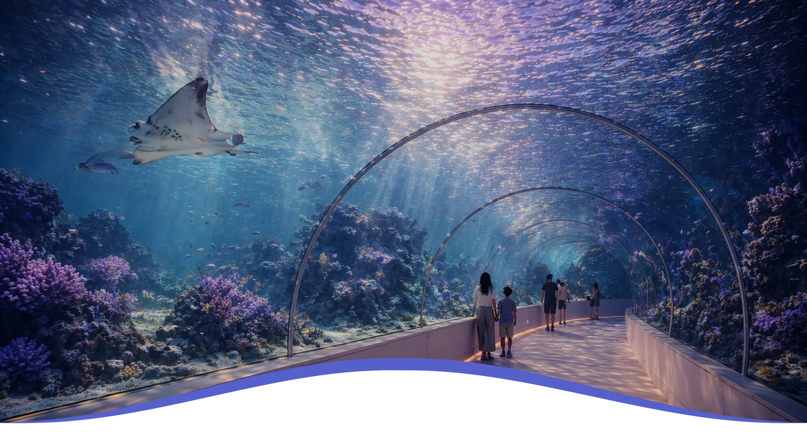
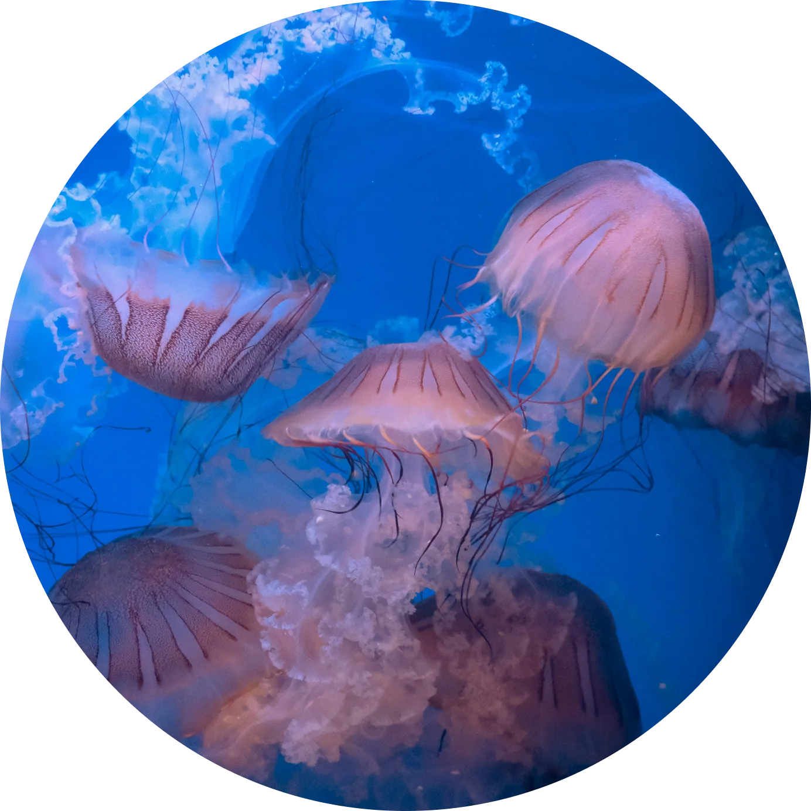
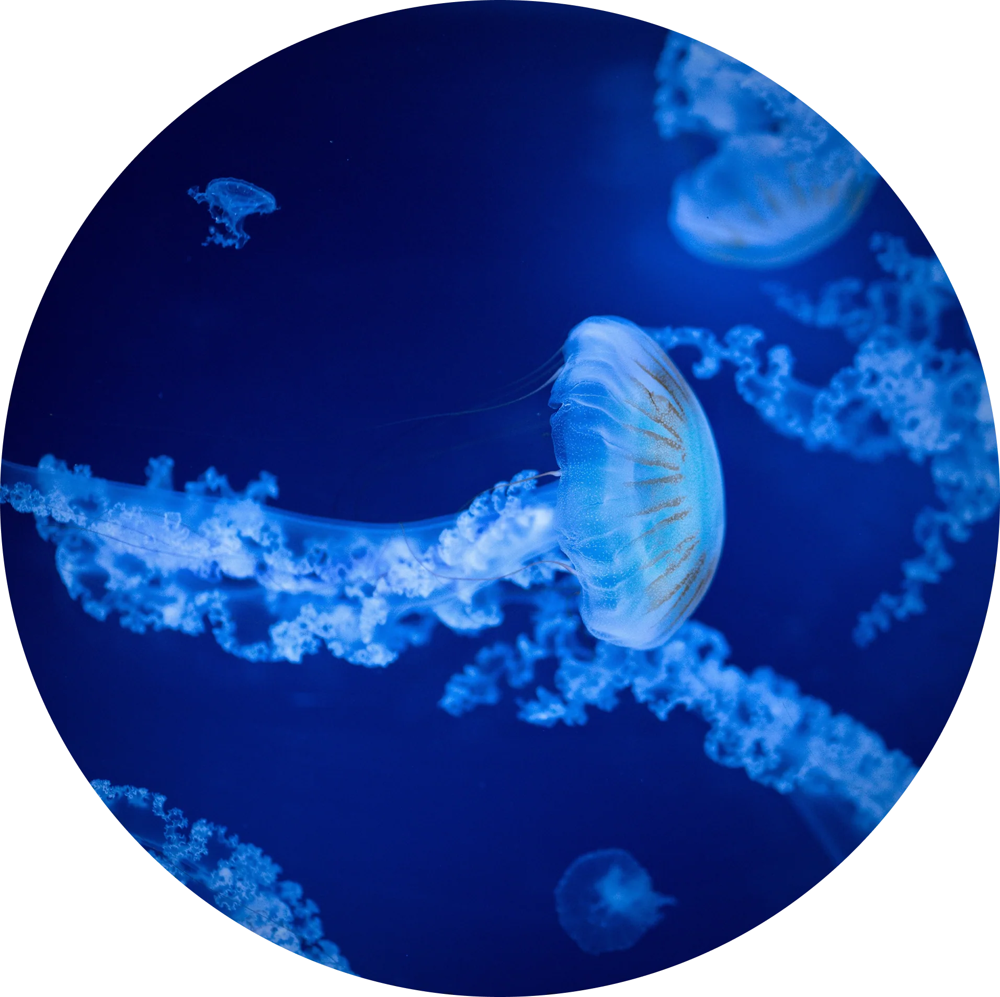
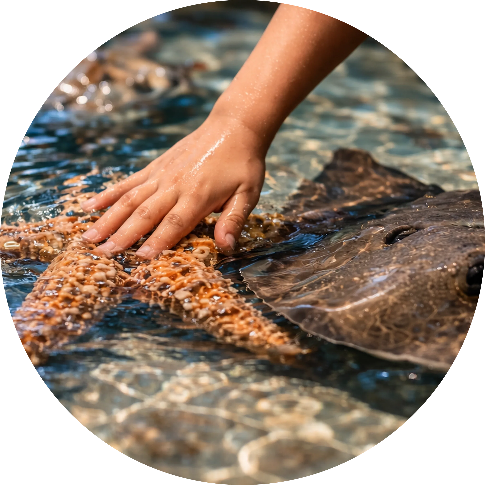
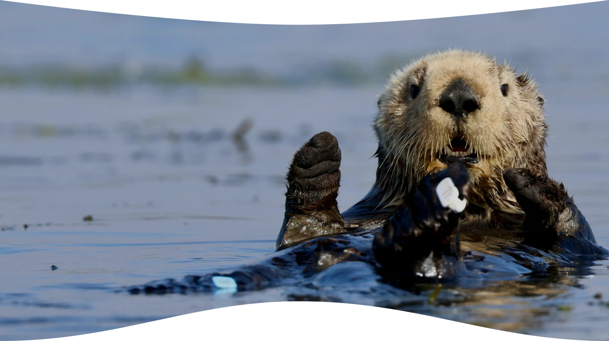

EXHIBITS & EXPERIENCES
Explore, interact, and get closer to marine life.
Bioluminescence
Move through a low lit gallery where glowing moon jellies drift through deep blue tanks and turn the whole room into a slower, luminous moment.



Hands-On Exhibit
Step into a hands-on area where you can gently interact with rays and sea stars while learning about shallow water marine life.

Most Playful Stop
Watch sea otters float, roll, and play in one of the most energetic spaces in the aquarium.